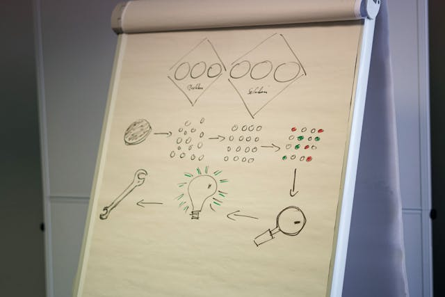

La estructuración de página es el proceso inicial y esencial en la creación de cualquier sitio web profesional. Se trata de definir cómo se organizará y distribuirá el contenido, las funcionalidades y la navegación del sitio, con base en los objetivos del cliente, el comportamiento del usuario y las mejores prácticas de UX/UI.
Nuestro enfoque en diseño web combina creatividad, estrategia de marca y tecnología para crear experiencias digitales impactantes y funcionales. Nos especializamos en diseñar sitios atractivos, responsivos y optimizados, que generan una conexión directa con el usuario.

Desarrollamos sistemas personalizados que se adaptan perfectamente a las necesidades de cada cliente, automatizando tareas, integrando procesos y mejorando el control operativo de manera significativa. Nuestros sistemas están diseñados para ser seguros, rápidos y escalables, adaptándose al crecimiento del negocio.
En un mundo digital en constante evolución, elegir al socio tecnológico adecuado puede marcar la diferencia entre el éxito y el estancamiento. En nuestra empresa, no solo desarrollamos software: creamos soluciones inteligentes, centradas en el usuario y alineadas con los objetivos de tu negocio. Lo que nos distingue no es solo la calidad técnica, sino nuestra capacidad para entender tus necesidades, aportar valor real y acompañarte en cada etapa de tu transformación digital.